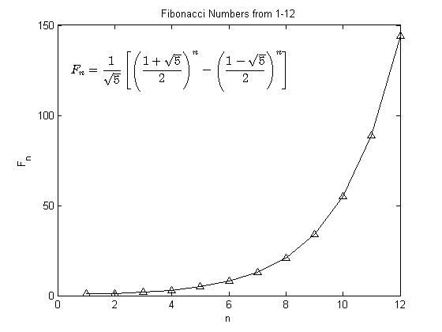

This is an example of how to add LaTeX equations to plots in MATLAB®.
Read about the text function in the MATLAB® documentation.
Go to MATLAB Plot Gallery
% Calculate the Fibonacci numbers from 1 to 12 fib = zeros(1, 12); for i = 1:12 fib(i) = (((1+sqrt(5))/2)^i - ((1-sqrt(5))/2)^i)/sqrt(5); end % Plot the first 12 Fibonacci numbers figure; plot(1:12, fib, 'k^-'); % Add a title and axis labels title('Fibonacci Numbers from 1-12'); xlabel('n'); ylabel('F_n'); % Build a string that contains the Latex expression eqtext = '$$F_n={1 \over \sqrt{5}}'; eqtext = [eqtext '\left[\left({1+\sqrt{5}\over 2}\right)^n -']; eqtext = [eqtext '\left({1-\sqrt{5}\over 2}\right)^n\right]$$']; % Add the string containing the Latex expression to the plot text(0.5, 125, eqtext, 'Interpreter', 'Latex', 'FontSize', 12, 'Color', 'k');